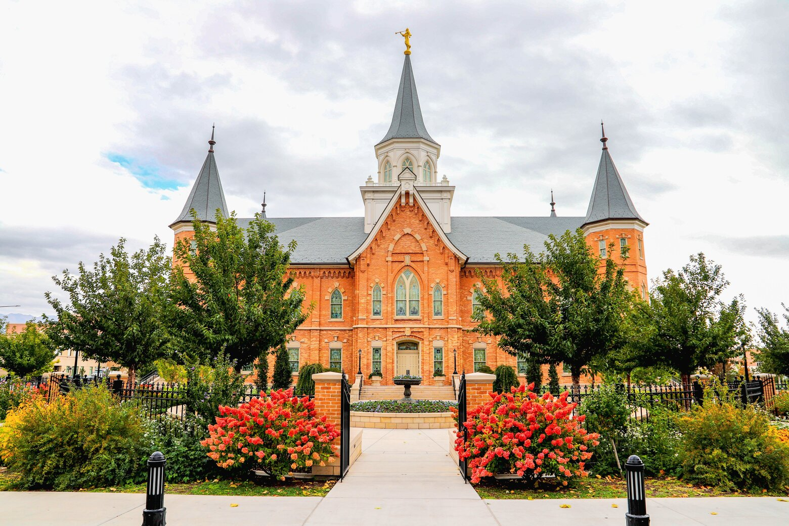
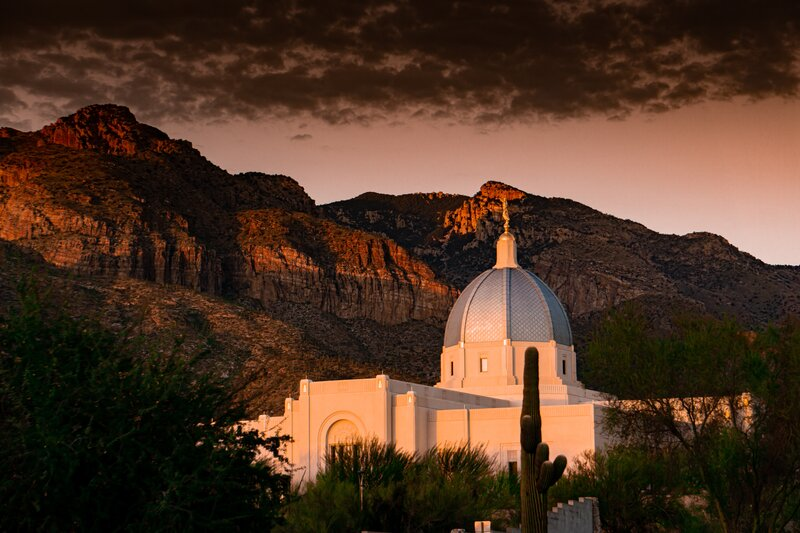

Temple Inn and Suites
Click here to book your stay TODAY!
Tuscon Arizona Temple
On October 6, 2012, President Thomas S. Monson announced plans for a temple to be built in Tucson, Arizona—Arizona's second largest city—during his opening remarks of the 182nd Semiannual General Conference. There are approximately 400,000 members of the Church in Arizona. The Tucson Arizona Temple was originally designed with a 95-foot steeple, which would have required a special permit. However, plans were altered, and the steeple was replaced with a dome-shaped cupola—reminiscent of the famous dome that crowns Italy's Florence Cathedral—which does comply with Pima County planning and zoning regulations.